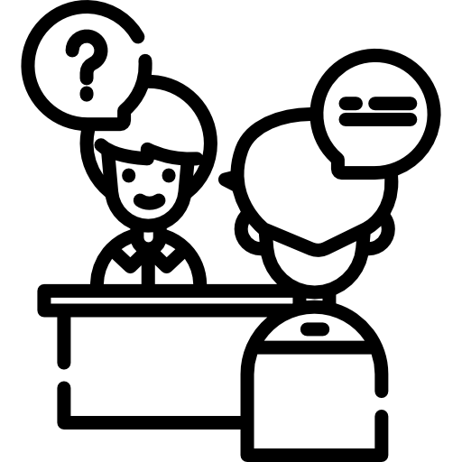
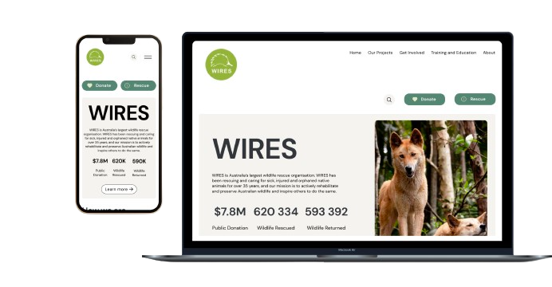
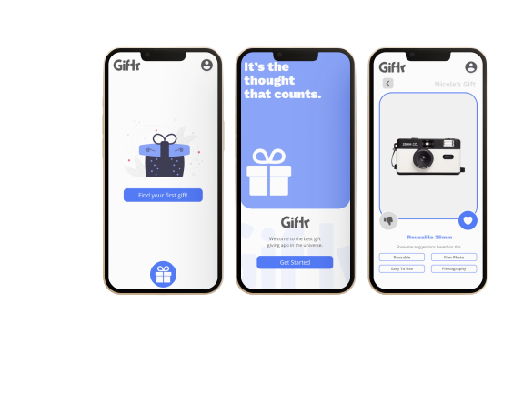

<script src="index.js"></script>

<script src="https://code.jquery.com/jquery-3.6.0.min.js"></script>


<!-- My Navigation section -->
<nav>
    <ul>
      <li><a href="Home">Home</a></li>
      <li><a href="About">About</a></li>
      <li><a href="MySkills">My Skills</a></li>
      <li><a href="Projects">Projects</a></li>
      <li><a href="Contact">Contact</a></li>
    </ul>
  </nav>
  


<!-- My UX Skills section -->
<!DOCTYPE html>
<link rel="stylesheet" href="style.css">
<html>
<section class="mySkills">
    <h1>My UX/UI Skills</h1>
    <div class="flexContainer">
      <div>
        
        <h3>User Research</h3>
        <p>I possess strong user research skills, allowing me to gain valuable insights into user behavior, needs, and preferences. With experience in conducting user interviews, surveys, and usability tests, I can effectively gather and analyze data to inform design decisions. My ability to identify patterns and trends helps me uncover user pain points and opportunities for improvement. By applying user-centered methodologies, I ensure that the final design solutions meet the needs and expectations of the target audience.
     </p>
      </div>
      <div>
        
        <h3>User Empathy</h3>
        <p>I possess a strong skill in user empathy, allowing me to deeply understand the emotions, perspectives, and motivations of users. Through techniques such as conducting user interviews, creating personas, and practicing active listening, I develop a profound understanding of user needs and challenges. This enables me to design solutions that truly resonate with users and address their pain points effectively. By empathizing with users throughout the design process, I ensure that the final product delivers a meaningful and engaging experience.
            
        </p>
      </div>
      <div>
        
        <h3>Qualitative Interviews</h3>
        <p>I possess strong skills in conducting qualitative interviews, allowing me to gather rich and in-depth insights from participants. Through careful preparation and effective questioning techniques, I create a comfortable and open environment for participants to share their experiences and perspectives. I excel at active listening and follow-up probing, enabling me to uncover valuable nuances and understand the underlying motivations and emotions behind participants' responses. With my expertise in qualitative interviewing, I am able to extract meaningful data that informs user-centered design decisions.

        </p>
      </div>
    </div>
  </section>
  
  <!-- My Work section -->
  <section class="myWork">
    <h1>My Work</h1>
    <div class="workGrid">
      <div>
        
      </div>
      <div>
        <h4>Non-profit Website Redesign(WIRES)</h4>
        <p>This is a project that redesigns WIRES websites, enhancing their online presence, user-friendliness, and message delivery to connect with their audience effectively and maximize their impact.</p>
        <button>View Project</button>
      </div>
      <div>
        
      </div>
      <div>
        <h4>Giftr UX Design Project</h4>
        <p>This is a mobile app aimed at helping users choose the perfect gifts for their loved ones. With a user-centered approach, we create a seamless and intuitive experience that simplifies the gift selection process, making it enjoyable and stress-free. Giftr is designed to bring joy and convenience to the act of giving.
        </p>
        <button>View Project</button>
      </div>
    </div>
    <button>View all projects</button>
  </section>
  

    <!-- My footer section -->
    <footer>
        <ul>
          <li><a href="Home">Home</a></li>
          <li><a href="About">About</a></li>
          <li><a href="MySkills">My Skills</a></li>
          <li><a href="Projects">Projects</a></li>
          <li><a href="Contact">Contact</a></li>
        </ul>

          <p>Copywirite 2023</p>
        </footer>
    </section>
  </html>

